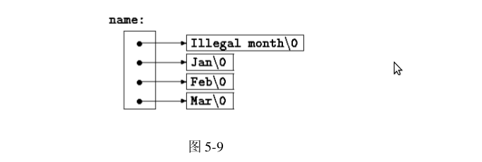
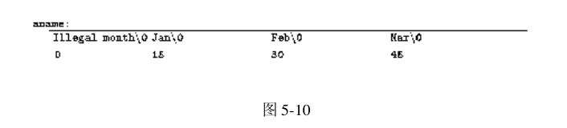

日期: 2012-05-16 21:05
&c; //用于取得变量c的内存地址.
*ip; //用于访问ip这个地址指向的对象. //ip可能是指针，也可能是数组名 //也就是说不一定只有指针存储地址。
int *ip;
*ip的结果是int型,但ip才是变量名，才是一个指针。
pa指向一个特定的元素
pa+1指向下一个元素
pa+i指向pa指向元素后的第i个元素
pa-i指向pa指向元素前的第i个元素
int a[10]; //声明一个长度为10的int型数组。
a==&a[0];//为true //所以 int *pa; pa=&a[0]; //等价于 pa=a;
int *pa; pa=a; //a[i]的表示方法： a[i]; *(pa+i); *(a+i);
*(a+i) 访问的
a[]
pa是个指针
pa[i]与*(pa+i)是等价的。
0是唯一的例外
p+n;
char *p; p = "hello world!";
char amessage[] = "nw is the time"; /* 定义一个数组 */ char *pmessage = "now is the time"; /* 定义一个指针 */ //amessage是一个数组，数组中的单个字符可以修改 //但amessage始终指向同一个存储位置 //pmessage是一个指针，指向一个字符串常量 //但它可以修改指向另一个地址
/* writelines: write output lines */
void writelines(char *lineptr[], int nlines)
{
while (nlines-- > 0)
printf("%s\n", *lineptr++);
}
f(int daytab[2][13]){...}
f(int daytab[][13]){...}
f(int (*daytab)[13]){...}
//声明参数是一个指针，指向具有13个元素的一维数组
//[]优先级高于*
int a[10][20]; int *b[10]
上面两者的区别
a[3][4]与b[3][4]语法上是合法的
row*20+col
char *name[]={"Illegal manth", "Jan", "Feb", "Mar"};

char aname[][15] = { "Illegal month", "Jan", "Feb", "Mar" };

argc:表示参数个数
argv: 是一个指向字符串指针数组的指针，每个字符串对应一个参数
char *argv[]
argv[0]的值是启动该程序的程序名，因此argc至少为1
-开头的可选参数
while(--argc>0 && (*++argv)[0]=='-')
while(c=*++argv[0])
switch(c){
case: 'x'
...
}
//(*++argv)[0]可用**++argv代替
void qsort(void *lineptr[], int left, int right,
int (*comp)(void *, void *));
//comp是一个接受两个指针作为参数，并返回一个整型的函数指针
//参数声明为void *型，这样qsort就可以处理任何类型的排序了
qsort((void**) lineptr, 0, nlines-1,
(int (*)(void*,void*))(numeric ? numcmp : strcmp));
//numcmp、strcamp本身代表了函数的地址，所以前面不需要取址符，同样的原因，数组名也不需要
if ((*comp)(v[i], v[left]) < 0)
swap(v, ++last, i);
//comp是一个指向函数的指针，*comp代表一个函数
void * 类型的指针，并把它转换回原先的类型时，不丢失信息